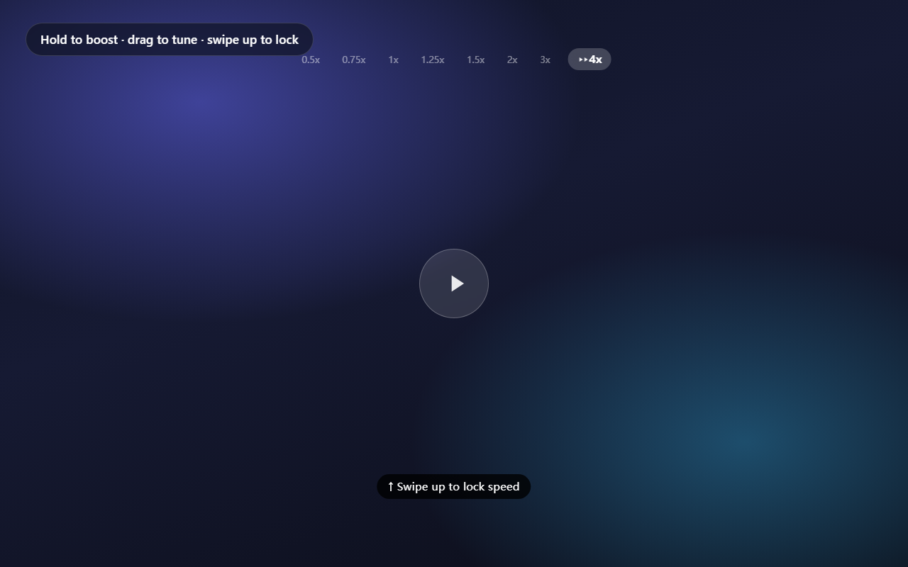

Gesture control for web video
Gestio puts the playback controls back under your thumb. Any page that plays an HTML5 video gets a full gesture layer — swipe, hold and tap on the picture instead of aiming for a tiny button at the bottom of a mobile player.
Works with touch, pen and mouse. No account, no tracking, no network requests — settings live
in chrome.storage.local on your own machine.

中文
Gestio 是一个给网页视频加触摸 / 鼠标 / 键盘手势的浏览器扩展：长按视频上下滑动改倍速、 横滑快进快退并显示落点、左右滑动分别调节亮度和音量、双击前进后退 10 秒。 不收集任何数据，不发起网络请求，设置只保存在本机。